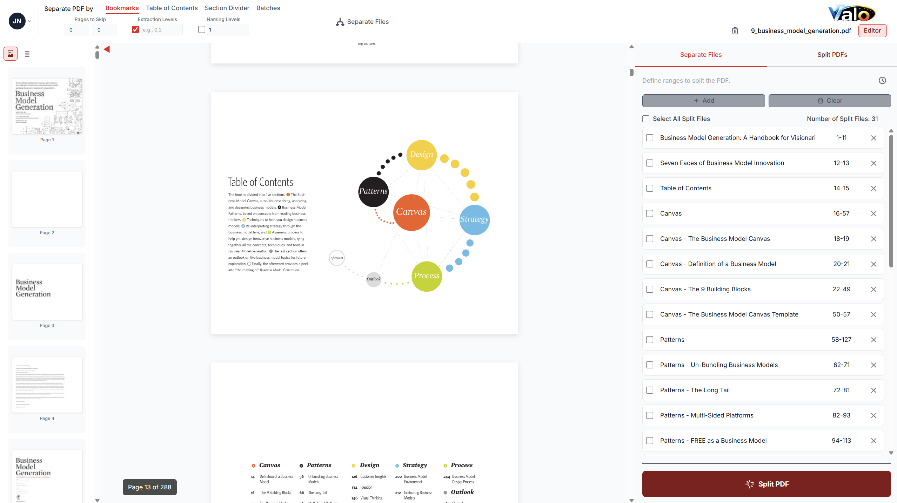
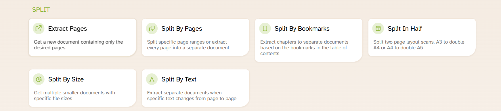
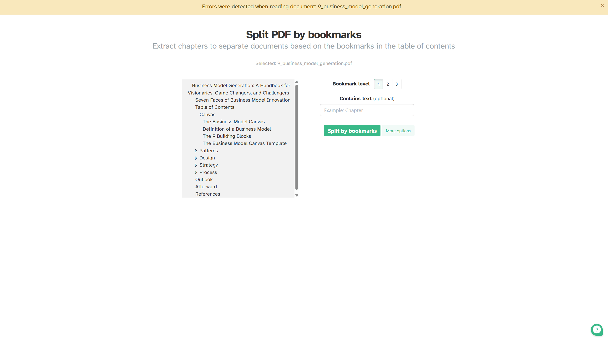

PDF Software Review
The Best PDF Splitters
Last Updated: 3/26/2025 | Page updated on May 4, 2026
Quick Summary
- ValoToolBox - Recommended for users who need automated and flexible splitting workflows, with an ad-free experience on both free and paid plans. Strong for both small and large PDFs.
- Sejda - Good browser splitter for quick one-off jobs.
- iLovePDF - Best known for very high user adoption and mainstream cloud convenience.
- Smallpdf - A simple splitter with a polished interface and basic workflows.
- PDF24 Tools - Fully free toolkit.
- PDFgear - A simple fixed/manual split option with a lightweight online flow.
- Adobe Acrobat - A large set of applications to use.
At-a-Glance Comparison
| Tool | Best For | Core Split Methods | Typical Limitation |
|---|---|---|---|
| ValoToolBox | Small and large PDF splitting | Bookmarks, TOC, Section Divider, fixed/variable batches, manual ranges (for example 1-1,3-14) | No split-by-size mode yet; text split planned |
| Sejda | Browser-first work | Ranges, even/odd, extract all pages | Free limits on file size/pages |
| iLovePDF | High user adoption | Range (Custom/Fixed/Smart), Pages, Size | Size mode premium; ad-heavy free experience |
| Smallpdf | Simple UI and basic splitting | Basic split and extract | Daily free-task caps |
| PDF24 Tools | Free no-paywall use | Page-based split variants | Older interface feel |
| PDFgear | Simple online splitting | Fixed split or manual split | Pricing/features by tier not clearly documented |
| Adobe Acrobat | Advanced workflows | Pages, bookmarks, size-oriented split | Subscription cost and flexibility |
Strengths & Weaknesses — ValoToolBox (summary)
Core Strengths
- Table of Contents split with AI-assisted control.
- Section Divider split for visually structured packets.
- Manual ranges that support skip logic (for example 1-1,3-14).
- Bookmark naming levels for cleaner output sets.
Typical Limitations
- No split-by-size mode in the current build; some file-size workflows require other tools.
- Advanced automation can have a learning curve for casual users.
- Some extractors or modes may need tuning for scanned or poorly encoded PDFs.
- Pricing and feature parity with large incumbents can vary by team needs.
Summary Verdict
ValoToolBox offers a deep method stack and practical controls that make it a strong option for teams focused on split accuracy and automation. Teams should weigh these strengths against specific needs such as split-by-size or simple one-off edits.
Table Comparison: Splitting Methods
| Splitting Method | ValoToolBox | Sejda | iLovePDF | Smallpdf | PDF24 Tools | PDFgear (Online) | Adobe (Web) |
|---|---|---|---|---|---|---|---|
| Manual split (pages/ranges) | Yes (with variation) | Yes | Yes | Yes | Yes | Yes | Yes (divider lines) |
| Fixed batch (every X pages) | Yes | Yes | Yes | Yes | Yes (basic) | Yes | No |
| Variable/custom ranges | Yes | Yes | Yes | Yes | Partial | No | No |
| Split by bookmarks | Yes (naming levels) | Yes | No | No | No | No | No (web) |
| Split by TOC | Yes (AI) | No | No | No | No | No | No |
| Section Divider Split | Yes | No | No | No | No | No | No |
| Skip pages option | Yes | No | No | No | No | No | No |
| Split by text content | Planned | Yes | No | No | No | No | No |
| Split by file size | No | Yes | No | No | No | No | No |
| Multiple-page preview | Not yet | Yes | Yes | Yes | Basic | None | Yes |
| User-friendliness | High | Lower | Very high | Medium | Medium | Medium | Medium |
| Pricing (monthly, one user) | $7.50-$15 | $7.50-$15 | ~$5-$9 | ~$10-$15 | Free | Free (online tier) | ~$20+ |

1. ValoToolBox
ValoToolBox focuses on automation and structured splitting options for both small and large PDFs.

What Makes ValoToolBox Strong
- Broad method stack: Bookmarks, TOC, Section Divider, batch patterns, and manual ranges.
- Automation that scales to large document packets and mixed PDF quality.
- Ad-free experience across free and paid plans.
Limits to Consider
- No split-by-size mode in the current build.
- Advanced automation can take time to learn for casual users.

2. Sejda
Sejda is easy for browser-based splitting and quick extraction tasks.


- Key strengths: Flexible input sources and practical split presets. Lots of options.
- Verdict: Great convenience, but free limits matter for large files.
What Makes Sejda Strong
- Covers most practical split styles in one platform.
- Includes split-by-text and split-by-size, which many tools omit.
- Useful visual/page extraction workflows for quick one-off edits.
Limits to Consider
- Method pages are separated, which can slow multi-step workflows.
- The UI can feel cluttered, and several methods have limited page previews.
- No dedicated TOC-driven split flow like ValoToolBox.
- No section-divider similarity workflow for scanned divider packets.

3. iLovePDF
iLovePDF is a widely used PDF platform with familiar, mainstream split modes and a simple web experience.
What Makes iLovePDF Strong
- Well-known platform with a familiar, easy-to-learn interface.
- Simple range and page-based splitting for common tasks.
- Broad ecosystem of PDF tools beyond splitting.
Limits to Consider
- Split-by-size is premium and may require a paid plan.
- Advanced automation and structure-aware splits are limited.
- Free tier can be ad-heavy depending on region and plan.

4. Smallpdf
Smallpdf is a clean, easy-to-use web splitter focused on straightforward page operations.
What Makes Smallpdf Strong
- Simple, fast interface with clear page previews.
- Good drag-and-drop UX for quick edits.
- Easy for casual users to learn.
Limits to Consider
- Basic split modes compared with advanced automation tools.
- Free-tier daily limits can interrupt high-volume workflows.

5. PDF24 Tools
PDF24 Tools is a practical free toolkit with both browser-based and desktop workflows.
What Makes PDF24 Tools Strong
- Completely free toolkit with wide utility coverage.
- Offers both online and desktop workflows.
- Good for cost-conscious teams and individuals.
Limits to Consider
- Interface feels older compared with modern premium tools.
- Advanced split automation is limited.

6. PDFgear
PDFgear is a simple splitter intended for straightforward document separation.
What Makes PDFgear Strong
- Lightweight interface for basic PDF handling.
- Fixed batch and manual range splitting are easy to access.
- Low-friction flow for quick one-off tasks.
Limits to Consider
- Limited advanced automation compared with larger platforms.
- Pricing and tier detail can be less explicit.
7. Adobe Acrobat
Adobe Acrobat is a full enterprise-grade document platform where splitting is one part of a larger workflow.
What Makes Adobe Acrobat Strong
- Comprehensive document suite with editing, review, and security features.
- Enterprise governance and collaboration integrations.
- Strong choice when splitting is part of a broader workflow.
Limits to Consider
- Higher cost and complexity compared with split-first tools.
- Web version offers limited split modes.
Conclusion
ValoToolBox provides a deep set of splitting methods and practical controls that make it a strong option for teams prioritizing accuracy and automation. Other tools in this guide offer complementary strengths — browser convenience, size-based splitting, or broad mainstream adoption — so choose the tool that best matches your workflow and constraints.
Visit ValoToolBox